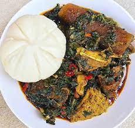

Description

A Nigerian food recipe known as pounded yam with vegetable soup
Ingredients
- Yam.
- Vegetables.
- Pepper.
- Locust beans.
- Meat or beef.
Steps
- Peel yam and cut into chunks and rinse
- Cook till it soften
- Pound the yam with mortar and pestle
- Cook the vegetable with sauce of meat and beef
- Add locust beans to bring out the aroma,then allow to done